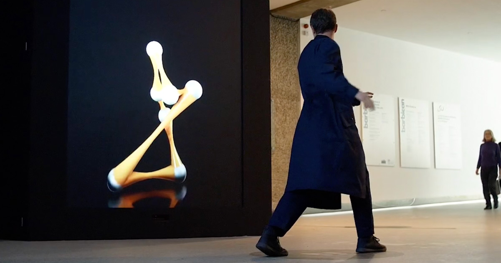
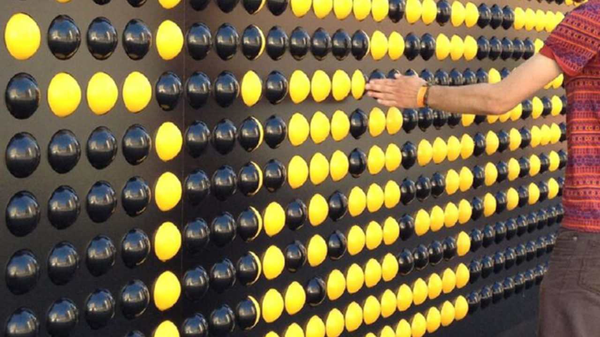

Dit project is gemaakt door 'Universal Everything'. Bij dit project bestaat uit verschillende onderdelen dat niet verteld wordt. Dit project is gemaakt voor een art centrum Barbican in London. Er worden geen achtergrond informatie gegeven. Dit project is geplaatst in de entree van de art centrum om de bezoekers te groeten. De project is een soort spiegel voor de persoon dat op de sensor staat. Je ziet een hele aparte vorm van 'jezelf', dat jouw bewegingen kopieert. Ook heeft het niet alleen een vorm. Het begint als een simpel primitieve vorm van de persoon die voor de sensor staat en verandert voor elke bezoeker dat erop staat. Het is een soort superior versie van zichzelf. Doordat de artwork telkens verandert per bezoeker, heeft het tot nu toe 47.000 mogelijke varianten! Wat ik echt tof vind aan dit project is dat er voor elke persoon een andere vorm is. Ook volgt het jouw bewegingen echt exact. De laatste keer dat ik zoiets had gedaan, was dit nog niet perfect. Het kon namelijk niet al jouw bewegingen volgen. Dit was echter wel een aantal jaren geleden. Maar hoe dan ook, ik vind het echt gaaf dat je je eigen vorm krijgt en dat het perfect jouw bewegingen na kan doen. Ook is dit niet de enige toffe projecten van Universal Everything. Ik vind dat zij echt toffe projecten maken.  Link project
Dit project is gemaakt door studenten aan de universiteit van kunst in London. Het project is ook gevestigd in London en bestaat uit balletjes dat voor de helft zwart zijn en voor de andere helft geel. Hiermee kan je dus allerlei letters en vormen maken, wat andere mensen kunnen lezen. Denk maar eens aan advertenties. De voorbijgangers kunnen dit hier lekker mee spelen en hun eigen vormen en berichtjes achter laten. Natuurlijk werkt dit wat minder als er teveel mensen met de songboard gaan spelen. Wat ik erg leuk vind is dat dit project grootschalig is doorgevoerd en door de gehele stad. Ik herinner me namelijk nog dat ik ook zo'n concept in een speeltuin zag toen ik nog klein was. Het brengt dus herinneringen met zich mee. Wat ook erg tof is, is dat er kaartjes zijn met de patronen die de voorbijgangers ook kunnen maken. Ook kan je hierdoor lekker gezellig met wat mensen wat doen. Vooral als je bijvoorbeeld aan het winkelen bent. Kan je hierdoor toch met vrienden en vriendinnen wat unieks meemaken.  Link project
Hier heb ik er dus voor gezorgd dat er een scoreboard is. De spelletje is in principe dat zodra er een lichtje brandt, je deze moet uitdoen door de sensor aan te raken. Ook maakt de piezo speaker geluid als je de lichtje uit hebt gemaakt. Verder komt er in processor punten erbij. Ik heb ervoor gezorgd dat zodra de de lichtje dus uitgaat, jij punten krijgt als deelnemer van het spelletje. Op processor is ook dus de scoreboard te zien. Het is een simpel spel dat leuker zou zijn door bijvoorbeeld ervoor te zorgen dat je op een sensor moet springen dat zich op de grond bevindt. Echter, had ik geen idee hoe ik dit bijvoorbeeld moet realiseren.
Playful interaction is een leuke onderwerp, dat naar mijn mening vaker toegepast moet worden. Playful interaction maakt namelijk normale activiteiten leuker, door een speelvolle factor erbij te zetten. Kijk maar naar alle voorbeelden dat bij de hoorcolleges verteld werden, als de piano trap en de flesje inleveren met een soort scoreboard. Uit onderzoek is hier ook blijkbaar gebleken dat veel meer mensen bijvoorbeeld de trap nemen of lege flesjes inleveren. Playful interactionn is dus een must als je gedrag op een positieve manier wilt veranderen. Ik denk dat iedereen wel bij zichzelf merkt dat het veel leuker is om een activiteit met een game factor uit te voeren. In de toekomst moet en zal dit zeker vaker terugkomen. Je merkt dat grote steden als London en Rotterdam, langzamerhand wat speelvoller worden. Als ik bijvoorbeeld in het centrum van Rotterdam loop, heb je vaak een aantal speelvolle activiteitjes als de piano trappen bij Rotterdam Centraal. Playful interaction wordt vast en zeker vaker toegepast. Niet alleen buiten, maar misschien zelfs ook op scholen. Wat we bij Media Theorie hebben geleerd, is dat bijvoorbeeld spelelementen leren veel leuker kan maken. Ik ben in principe erg tevreden met mijn uiteindelijke eindproduct. Echter, kon dit natuurlijk veel playfuller gemaakt worden, door bijvoorbeeld wat ik boven heb genoemd, op de sensor te kunnen springen. Ook bijvoorbeeld met een mini hamertje op een sensor slaan en de lichtjes uit laten gaan, zou het leuker kunnen maken. Dit is echter een leuke beginnetje dat natuurlijk veel mogelijkheden heeft. Een erg leuke challenge. Niet geheel met plezier gemaakt, maar het was wel geinig als ik het eindproduct zie. Mijn ervaring met deze technologie is in principe hetzelfde als in challenge 2. Ik heb namelijk hier ook met de Arduino gewerkt. Vooral het coderen was echt een 'pain in the ass' ervaring. Maar toch was het coderen erg leerzaam. Ik merk wel hoe vaker ik het gebruik en toepas in mijn code, hoe beter ik het kan gebruiken en begrijpt. Toch een goede en leerzame ervaring gekregen van dit.